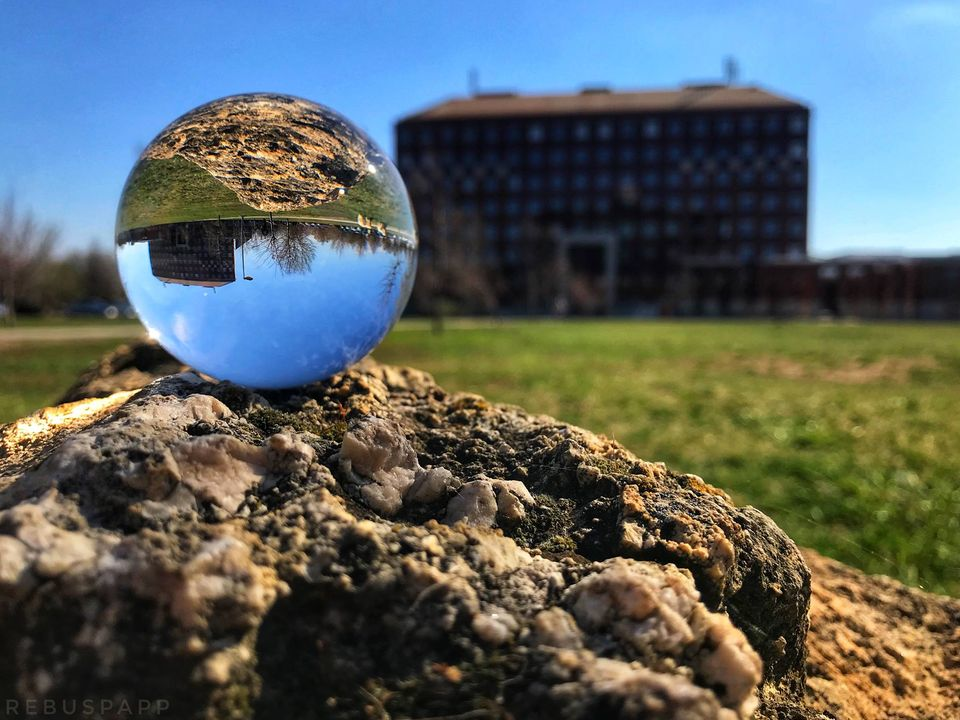

Rough start
I began my journey into programming and advanced mathematics at university,
despite having little prior knowledge. The challenges were significant, but I maintained a positive outlook,
focusing on growth and learning. Overcoming doubts and pushing through difficulties, I stayed determined
in my goal to become a software engineer. My persistence paid off,
and I proudly earned a Bachelor of Science degree in Computer Science.
(Budapest, Hungary - ELTE university - 2024)